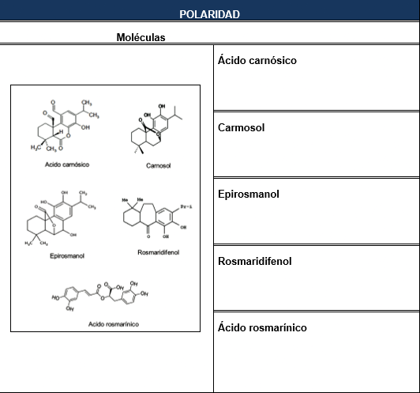

1. PROBLEMA O PREGUNTA A RESOLVER A TRAVÉS DEL EXPERIMENTO.
Pregunta principal:
- ¿Cuál es la importancia de la polaridad de los compuestos en la extracción de principios activos de plantas medicinales mediante destilación Soxhlet?

Ejemplos de preguntas complementarias que puede formular cada equipo
1. ¿Qué diferencias existen en la solubilidad de los compuestos al variar la polaridad del solvente (etanol vs. acetona)?
2. ¿Cómo influye la temperatura en la estabilidad de compuestos como el ácido carnósico durante la destilación?
3. ¿Qué relación existe entre la estructura química (grupos funcionales) y la polaridad de cada molécula?
¿Se podrían emplear solventes más amigables con el ambiente (ej. agua, glicerina) sin perder eficiencia en la extracción?
4. ¿Qué ventajas ofrece la polaridad de estos compuestos en aplicaciones farmacéuticas y cosméticas?